Tutorial 1 - Tracking motion with Posetrak¶
In this tutorial you will do a full motion capture from existing video files: set up a Posetrak project, detect persons and poses from the videos, and finally track a person's motion and export it as a BVH file that can be used in Blender and other 3D applications.
Before starting, install the Posetrak application. See the setup guide if you haven't done that yet. Then load the tutorial materials and unzip it to a directory in your computer. The zip file contains an (almost) empty Posetrak project file and 3 videos that are shot with different types of cameras at the same time, showing the captured motion from different angles.
1. Setting up the project¶
- Open Posetrak application, choose File -> Open session... and open the tutorial1.db file
- Select Session -> New capture...
- In the dialog, name your capture "Tutorial 1" , click "Add videos..." and select all the 3 video files that you downloaded
- For each video file, select the correct camera (video file names mention the
camera used, and the tutorial project file has required configuration data
for these)
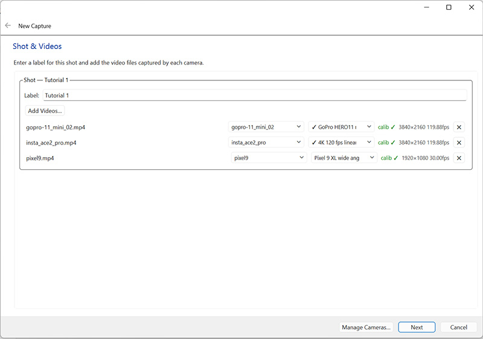
Click "Next" to move forward.
2. Synchronizing videos¶
Posetrak uses multiple camera views to reconstruct the exact pose of performers. For this, the videos must be in sync: Posetrak needs to know which frames are captured at the same time. It is usually enough that you show it the frames for two moments, one near the start of the videos and one near their end. To help with this, I have added a blinking LED on the floor: you can first search for roughly the same moment in the videos, then look for the exact moments where the LED lights up or turns off.
The "Camera Synchronization" window shows videos from 2 cameras side by side. The left one is the reference camera, the right is the camera you are synchronizing with the reference. I recommend using one camera as reference and synchronizing all others to it, but this is not the only way: for example, you can synchronize camera2 to camera1 and camera3 to camera2.
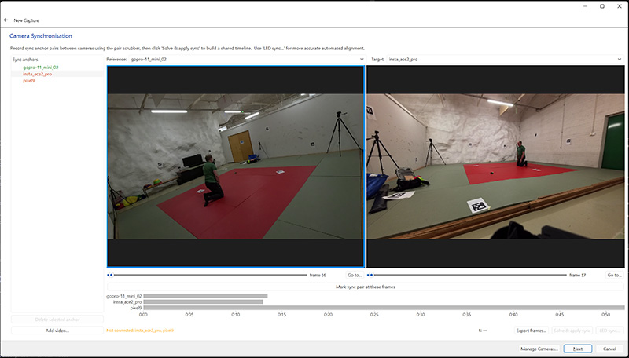
You can move the video playheads in several ways:
-
Use the slider below the videos to quickly find the place you are looking for.
-
For exact frame selection use keyboard shortcuts: in the reference video (the left one)
dmoves one frame forward andaone frame backwards. For the target video (right) the corresponding keys arelandj. Holding shift while pressing these keys moves the video 10 frames back/forward. -
You can also go to a specific frame by clicking the "Go to..." button on the right side of the slider.
Check that you have "gopro-11_mini_02" selected as reference and
"insta_ace2_pro" as target camera. Move the reference camera playhead using the
a and d keys to the first frame where the small LED on the floor goes off
(that is frame 16). Then find the same moment in the target camera using j and
l keys (it is frame 17). Verify that you have these frames in the two video
windows and click "Mark sync pair at these frames". You should see new entries
for the two cameras in the "Sync anchors" list on the left side of the window.
Next, change the target camera to "pixel9" and repeat the procedure - find the first frame where pixel9 shows the LED off (it is also frame 17). Click "Mark sync pair at these frames" again.
Now Posetrak knows a common "moment" at the start of the videos, but this is not
enough as the cameras might have slightly different frame rates. Therefore we
need to add another sync point at the end of the videos. Move the reference
camera playhead to roughly frame 1470 and use a/d to locate the frame where
the LED turns on (1477). Do the same for pixel9 in the right video panel (the
right frame is 1479). Click "Mark sync pairs..." again.
This time you will get a warning dialog that the frame rate ratio is inconsistent. Pixel9's video declares a slower frame rate than it was actually shot at (see Synchronizing videos for why). Click the "pixel9 -> 119.962 fps" button to use the real capture rate; you'll see the timeline adjust to match.
Finally, change the target camera to insta_ace2_pro, find the corresponding frame where the LED turns on (frame 1477) and click "Mark sync pairs..." once more. This time you do not get the frame rate warning message, as that video file has the correct frame rate.
The left pane should now show 4 sync anchors for the reference camera and 2 for the others. We are done with syncing the captured material. Click "Solve & apply sync", then "Next".
3. Extrinsics calibration¶
Next, we need to tell it how they relate in space: where each camera was located and how it was oriented. This is called extrinsics calibration. Extrinsics calibration guide has more information about the concepts and the automated methods available (markers, calibration rigs). This tutorial skips those in favor of placing control points manually, so you learn the UI they all build on.
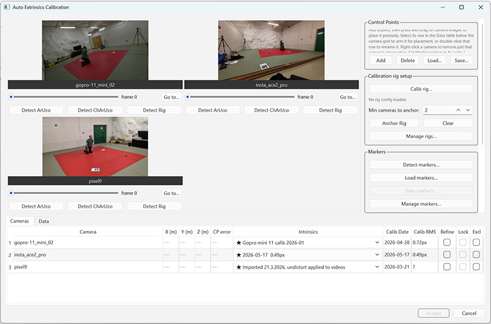
In the "Extrinsics calibration" page, click "Calibrate…".
Open the "Data" tab at the bottom of the dialog. This shows the points already located - so far there are none.
We will place the origin of our coordinate system at the corner of the red tatami area nearest to the blinking LED we used for synchronization. See the iamges below for corrrect location of this and other control points.
In the qright side pane, locate "Control points" and click "Add...". Then click that corner in all 3 camera images. When you press the mouse button on top of a camera image, it zooms into the area around the mouse cursor. You can then move the control point by dragging the mouse with the left button held down. When you release the button, the control point is placed at that location. (You can also redo this later if the point is in the wrong place.)
After placing the control point, enable the "Fix 3D position" checkbox in the bottom right corner of the window. Check that the X, Y and Z coordinates are all zero and click "Apply".
Our origin is now fixed, but we need more control points to set the axis directions and scale. Add the following four the same way, fixing each one's 3D position as given:
| # | Location | Coordinates | Notes |
|---|---|---|---|
| 2 | Corner of the red area near the benches and the green door | (4, 0, 0) | Red area is 4x4 m |
| 3 | Opposite corner from the origin | (4, 4, 0) | Not visible in gopro-11_mini_01; move the insta_ace2_pro playhead, since the performer is in front of it in the first frame |
| 4 | Last remaining corner of the red area | (0, 4, 0) | Not visible in pixel9 |
| 5 | Corner of the red mats near the paper on the floor and control point 4 | (1, 3, 0) | A bit difficult to locate in insta_ace2_pro |
These images show correct locations of all 5 control points:
GoPro-11_mini_02 (CP 3 is not visible to this camera)
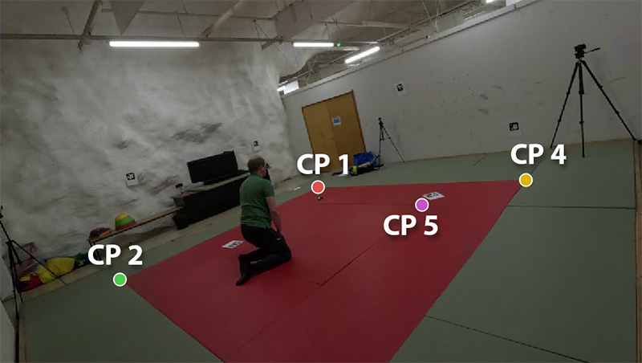
Insta-ace2_pro
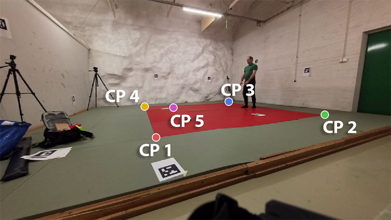
Pixel 9 (control point 4 is not visible to this camera)
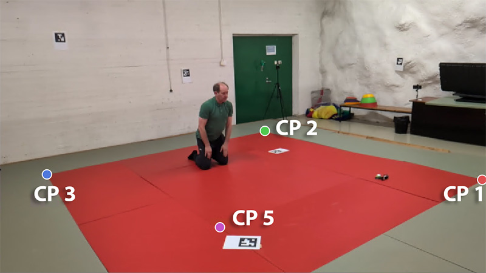
Now you can try solving extrinsics. Locate the "Solve" pane on the right side of the window, disable "SIFT" for now and click "Match and solve". Open the "Cameras" tab at the bottom of the window and check the solution quality. In my case it looks quite good already: all cameras show ~5 pixel max error.
We can use automatic marker detection to add additional points to get a more accurate solution. There are a few ArUco markers attached to the room's walls and floor, and Posetrak can detect these automatically. From the sidebar's "Markers" section, click "Detect markers...". In the dialog that opens, select the correct marker dictionary, in this case DICT_5X5_50, and press OK. You should see yellow dots at each marker corner. Click "Match and solve..." again to use the newly detected markers as additional control points.
The extrinsics calibration is now done. Click "Accept".
4. Define persons in the capture¶
This is the last step of setting up the capture. Click "Add...", give the tracked person a name (anything is fine). Select "Default male" as skeleton.
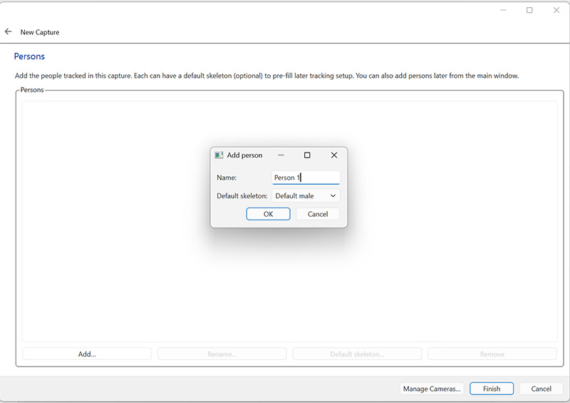
5. Define trial & detect motion from the videos¶
Now the capture material is ready and we can try to capture people's motions from it. The time range of capture that Posetrak actually analyzes is called a trial. Often you might leave the cameras on for a longer period and most of that time nothing interesting happens (just turning on 6 or 8 cameras takes long time).
Select your capture from the list in the navigation page (left side of the main window). Use the time slider below the videos to select the start time for your trial (in this case around 2s) and click "Mark Start". Move the time slider to the end time of your trial (in this case around 12s) and click "Mark End".
Click "New trial..." and give your trial a name.
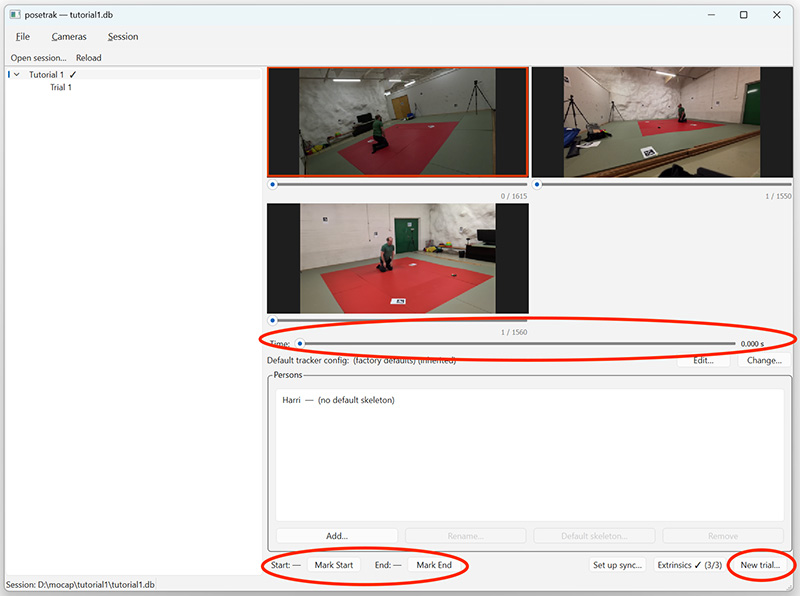
You should see the trial appear in the side pane under your capture. Select it.
Next, we need to detect the persons and their poses in the videos. Click "Run detection...". Select "vitpose-l-133kp" as pose model, leave the other settings at their default values, and click "Run Detection".
Running the detection takes some time. The first time, Posetrak loads the AI models needed for this from the internet before starting. After it finishes, you will see a detection under the trial (yes, you can run multiple detections for the same trial, for example if you want to use different detection algorithms for people, animals, etc.).
6. Match the detected motions to persons¶
Go to the detection page. You see a timeline of detected persons in each camera. When you hover on top of it, you see the detected person and pose keypoints on the right. Green dots are keypoints the detector is confident with; yellow and red points are uncertain detections.
Before continuing we need to tell Posetrak who the person in each detections is. In this capture there is only 1 person so this is easy, but yuo track multiple persons (or others are just visible to some cameras) there will be more detections. Right-click a row in the timeline and select the person in the pictures. Do this for all 3 cameras. When you are ready, click "Save assignments".
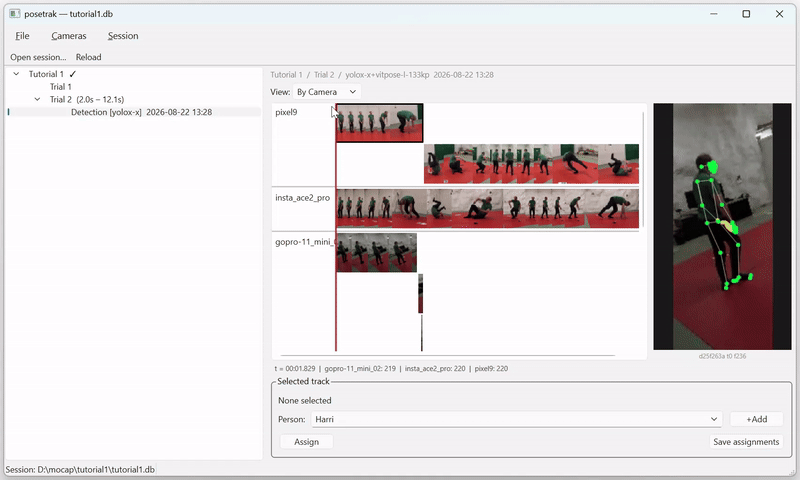
Some of the videos have multiple detection rows even though there is only 1 person present. This happens if the person tracking algorithm "loses" the person, even for a brief moment. It plays safe, starts a new detection and lets you decide if it is still the same person. See analyzing poses for more details on this, and when a separate segmentation stage is worth the extra setup (not for this simple, single-person case).
After saving the assignments, you'll see a new entry for the person under the detection in the navigation pane. Selecting that opens another page in the main window.
7. Capturing 3D movement¶
Finally, we are ready for running the actual motion capture! In the person page under detection, find the "Run tracker..." button and click it.
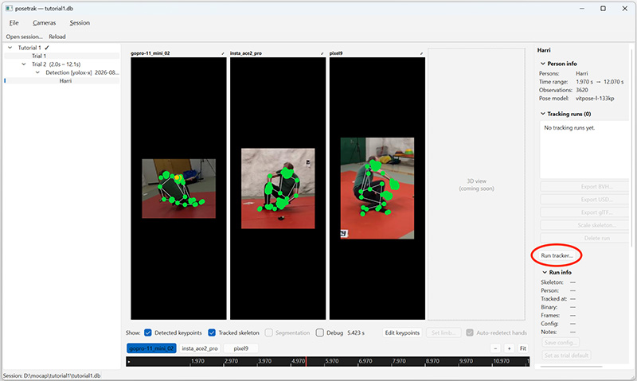
The tracker options dialog opens. The defaults are fine for this tutorial, so just click "Run Tracker" again at the bottom of the dialog. You can follow the tracker's progress; in my computer it takes bit less than 2 minutes.
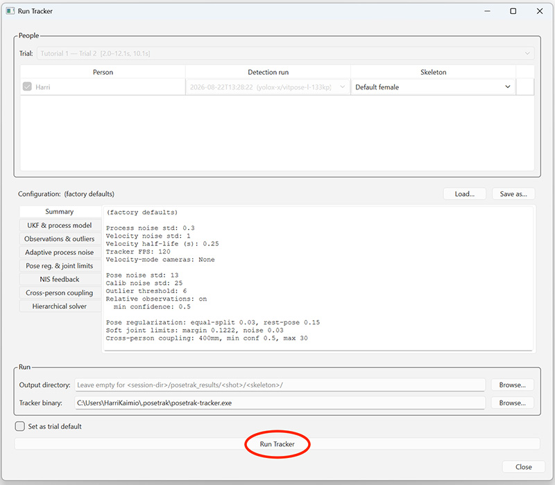
Congratulations - you are done! When the tracker finishes, there is a new entry in the navigation pane under the person. That page looks almost the same as the person page, but also shows the tracking results: you should see yellow dots on top of the videos in addition to green dots. The yellow dots are the tracked 3D joint positions as seen from that camera's point of view, while green dots are the joint keypoints originally detected from the video. Ideally, they should be at the same locations.
You can now export the captured motion as a BVH file by clicking the "Export BVH..." button. Then open Blender, select File -> Import -> Motion Capture (.bvh) and load the file in Blender.
You have now completed your first motion capture in Posetrak! Next:
-
If you want to use the captured motion on a real Blender character, continue to the retargeting tutorial.
-
If you need to track multiple persons at same time, read segmentation tutorial to learn about Posetrak's advanced tools that help in this task.